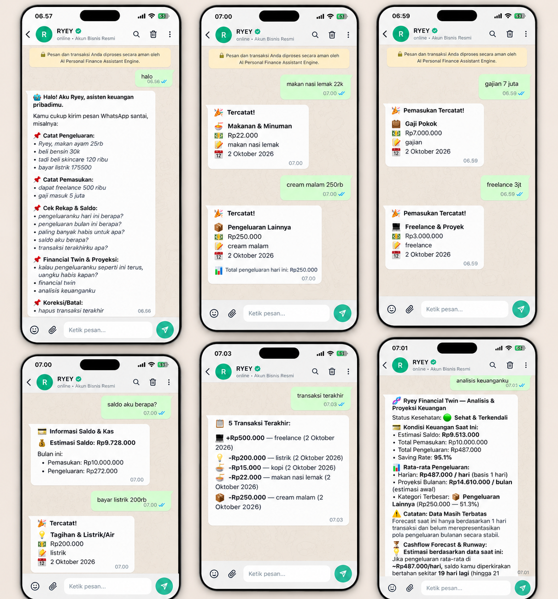

RYEY — AI Personal Finance Assistant
Next-Gen Intelligent Financial Twin, Natural Language Expense Tracking & Cashflow Forecasting

RYEY — AI Personal Finance Assistant adalah asisten keuangan pribadi cerdas berbasis Artificial Intelligence yang mempermudah pengguna mencatat, mengelola, dan menganalisis kondisi finansial harian hanya melalui bahasa alami (Natural Language).
Aplikasi ini memadukan kemampuan AI NLP untuk memahami pencatatan pemasukan dan pengeluaran secara fleksibel tanpa perlu input form yang kaku, pemeriksaan saldo seketika, ringkasan pengeluaran multi-kategori, serta modul Financial Twin yang memberikan saran finansial personal dan proyeksi arus kas (cashflow forecasting) masa depan secara akurat.
Dengan visual dashboard yang modern dan responsif, pengguna mendapatkan kendali penuh atas kesehatan finansial mereka melalui visualisasi tren pengeluaran, peringatan anggaran cerdas, dan rekomendasi alokasi dana yang disesuaikan dengan pola pengeluaran masing-masing individu.
- Natural Language Transaction Logging: Pencatatan pemasukan dan pengeluaran otomatis cukup dengan mengetik kalimat bahasa natural (contoh: "Beli kopi 25rb sama makan siang 45rb tadi siang").
- Financial Twin & Personalized Insights: Analisis model AI yang memetakan kebiasaan finansial pengguna serta memberikan saran penghematan dan peringatan anomali belanja.
- Predictive Cashflow Forecasting: Proyeksi arus kas masa depan berbasis tren pengeluaran historis untuk mencegah defisit sebelum akhir bulan.
- Instant Balance & Category Summaries: Pengecekan saldo real-time, grafik breakdown pengeluaran menurut kategori, dan perbandingan tren bulanan.
- n8n Workflow & Multi-Service Automation: Otomasi alur data backend dan sinkronisasi notifikasi pengeluaran menggunakan workflow engine n8n yang terhubung mulus dengan model AI.
- Transaction & Budget Management: Manajemen transaksi menyeluruh dengan kemampuan filtering, pelacakan anggaran batas atas (spending limits), dan export data.
- Interactive AI Financial Chat Assistant: Konsultasi interaktif seputar strategi keuangan, perencanaan tabungan, dan simulasi pengeluaran.
- Pencatatan Finansial Tanpa Friksi: Menghilangkan keengganan mencatat keuangan harian berkat input teks natural yang instan.
- Keputusan Finansial Berbasis Data: Memberikan kejelasan terhadap ke mana alokasi dana terbesar dialirkan dan potensi penghematan yang bisa dilakukan.
- Pencegahan Overspending: Peringatan dini sebelum anggaran per kategori melampaui batas yang direncanakan.